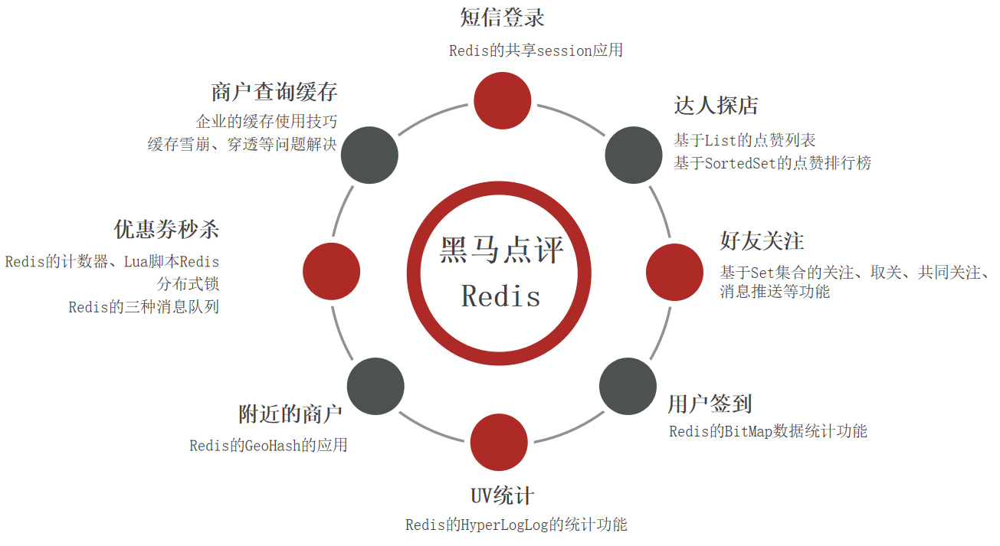
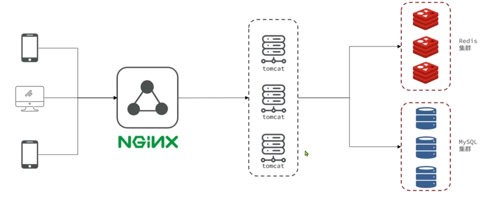
tb_user：用户表
tb_user_info：用户详情表
tb_shop：商户信息表
tb_shop_type：商户类型表
tb_blog：用户日记表（达人探店日记）
tb_follow：用户关注表
tb_voucher：优惠券表
tb_voucher_order：优惠券的订单表
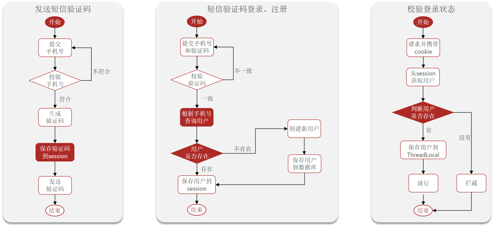
session和cookie: 在 Web 应用中，通常需要跟踪用户的状态，比如用户是否登录、用户的购物车内容等。Cookie 常被用于存储用户的唯一标识（如session ID），而 Session 则基于这个session ID 来存储和管理与该用户相关的具体状态信息。当用户访问 Web 应用时，服务器生成一个唯一的 Session ID，并通过 Cookie 将其发送到用户的浏览器。此后，用户的后续请求都会携带这个 Cookie，服务器根据 Cookie 中的 Session ID 来查找对应的 Session，从而获取和更新用户的状态信息。
@RequestBody: 请求体中通常包含了要传递给服务器的数据，如 JSON、XML 格式的数据等。@RequestBody注解可以将这些数据自动转换为对应的 Java 对象，方便在服务器端进行处理。
校验登录状态信息功能放入前置拦截器中。
threadlocal存储用户信息，方便后续使用。
package com.hmdp.utils;
import com.hmdp.dto.UserDTO;
public class UserHolder {
private static final ThreadLocal<UserDTO> tl = new ThreadLocal<>();
public static void saveUser(UserDTO user){
tl.set(user);
}
public static UserDTO getUser(){
return tl.get();
}
public static void removeUser(){
tl.remove();
}
}
session共享问题： 多台Tomcat并不共享session存储空间，当请求切换到不同tomcat服务时导致数据丢失
解决方案应该满足：
* 数据共享
* 内存存储
* key, value结构
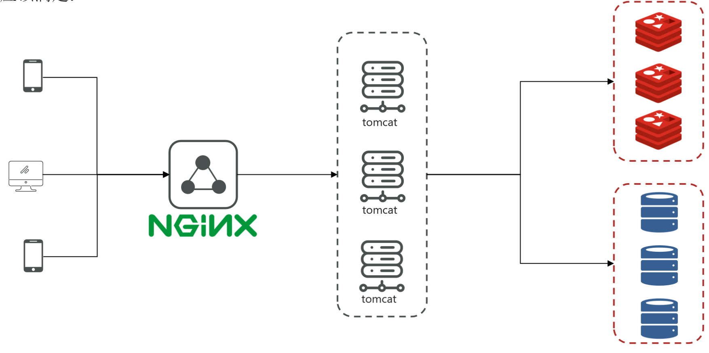
key,value数据结构
1. 保存登录的用户信息，可以用String结构，以Json字符串来保存，比较直观
2. 也可以用Hash结构，可以将对象中的每个字段独立存储，可以针对单个字段做CRUD，并且内存更少、
使用stringRedisTemplate类的
public Result sendCode(String phone, HttpSession session) {
// 1.校验手机号
if (RegexUtils.isPhoneInvalid(phone)) {
// 2.如果不符合，返回错误信息
return Result.fail("手机号格式错误！");
}
// 3.符合，生成验证码
String code = RandomUtil.randomNumbers(6);
// 4.保存验证码到 redis
stringRedisTemplate.opsForValue().set(LOGIN_CODE_KEY + phone, code, LOGIN_CODE_TTL, TimeUnit.MINUTES);
// 5.发送验证码
log.debug("发送短信验证码成功，验证码：{}", code);
// 返回ok
return Result.ok();
}
最后会返回一个登录令牌给用户给用户做登录
public Result login(LoginFormDTO loginForm, HttpSession session) {
// 1.校验手机号
String phone = loginForm.getPhone();
if (RegexUtils.isPhoneInvalid(phone)) {
// 2.如果不符合，返回错误信息
return Result.fail("手机号格式错误！");
}
// 3.从redis获取验证码并校验
String cacheCode = stringRedisTemplate.opsForValue().get(LOGIN_CODE_KEY + phone);
String code = loginForm.getCode();
if (cacheCode == null || !cacheCode.equals(code)) {
// 不一致，报错
return Result.fail("验证码错误");
}
// 4.一致，根据手机号查询用户 select * from tb_user where phone = ?
User user = query().eq("phone", phone).one();
// 5.判断用户是否存在
if (user == null) {
// 6.不存在，创建新用户并保存
user = createUserWithPhone(phone);
}
// 8.返回token
return Result.ok(generateToken(user));
}
public String generateToken(User user) {
// 7.保存用户信息到 redis中
// 7.1.随机生成token，作为登录令牌
String token = UUID.randomUUID().toString(true);
// 7.2.将User对象转为HashMap存储
UserDTO userDTO = BeanUtil.copyProperties(user, UserDTO.class);
Map<String, Object> userMap = BeanUtil.beanToMap(userDTO, new HashMap<>(),
CopyOptions.create()
.setIgnoreNullValue(true)
.setFieldValueEditor((fieldName, fieldValue) -> fieldValue.toString()));
// 7.3.存储
String tokenKey = LOGIN_USER_KEY + token;
stringRedisTemplate.opsForHash().putAll(tokenKey, userMap);
// 7.4.设置token有效期
stringRedisTemplate.expire(tokenKey, LOGIN_USER_TTL, TimeUnit.MINUTES);
return token;
}
在登录校验时，要刷新token的有效期，保证用户在操作时不会因为登录状态失效而被踢出，只要用户一直在操作，token就不会失效。
一个拦截，这种方法会拦截所有的请求，不管是否需要登录，这样会导致不需要登录的接口也会被拦截，进行登录校验。 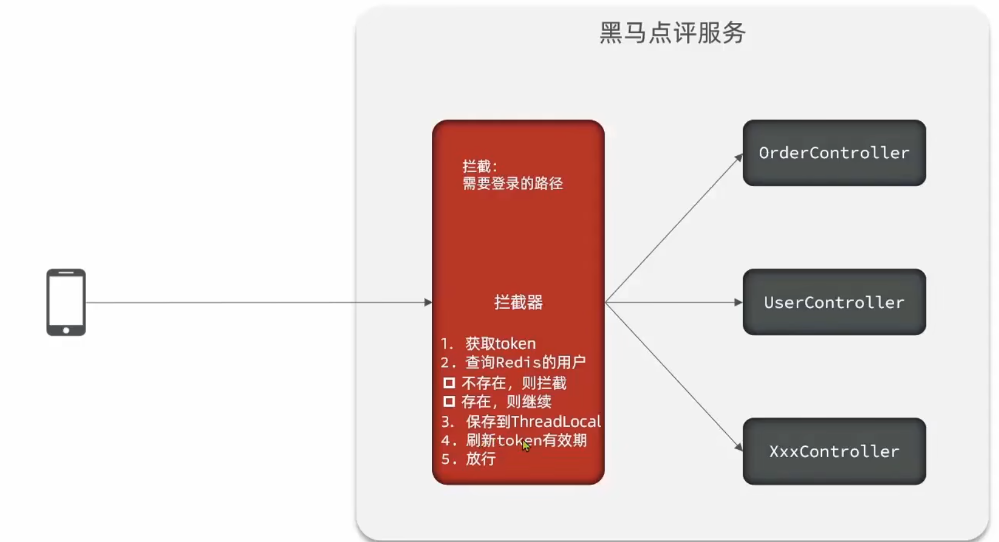 解决的问题： 对于不需要登录的接口，比如首页、商户详情，不需要做登录校验 解决方法： 使用两个拦截器进行拦截，第一个拦截器拦截一切路径，第二个拦截器对需要登录的路径拦截 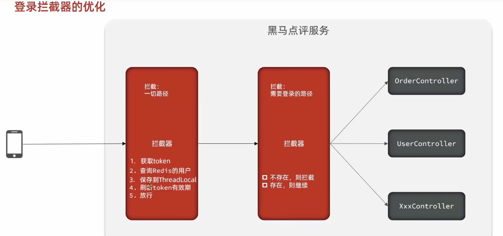
给商户信息添加缓存 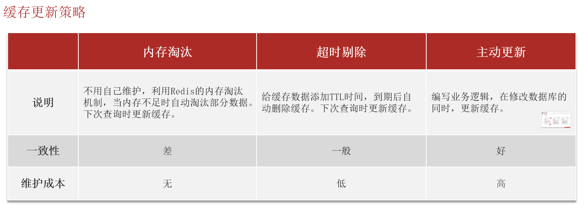
1. 低一致性需求：使用内存淘汰机制，例如商铺类型的查询缓存
2. 高一致性需求：主动更新，并以超时剔除作为兜底方案，例如店铺详情查询的缓存
* 读操作：
缓存命中则直接返回
缓存未命中则查询数据库，并写入缓存，设定超时时间
* 写操作：
先写数据库，然后再删除缓存
要确保数据库与缓存操作的原子性
案例：修改ShopController的业务逻辑，满足下面的需求
基于StringRedisTemplate封装一个缓存工具类，满足下列需求：
方法1：将任意Java对象序列化为json并存储在string类型的key中，并且可以设置TTL过期时间
方法2：将任意Java对象序列化为json并存储在string类型的key中，并且可以设置逻辑过期时间，用于处理缓存击穿问题
方法3：根据指定的key查询缓存，并反序列化为指定类型，利用缓存空值的方式解决缓存穿透问题
方法4：根据指定的key查询缓存，并反序列化为指定类型，需要利用逻辑过期解决缓存击穿问题
tb_voucher_order: 优惠券订单表, 记录了下单的用户id、购买的代金卷id, 逐渐采用全局唯一ID，没有使用自增的方式 。
id自增存在的问题：
* id的规律性太明显，会被用户发现
* 受单表数据量的限制（海量数据，千万级别，需要进行水平分表，此时采用自增策略，就会出现Id冲突）
解决方法：全局ID生成器（Redis解决方案）全局ID生成器，是一种在分布式系统下用来生成全局唯一ID的工具，一般 要满足下列特性
* 唯一性
* 高可用
* 高性能
* 递增性
* 安全性
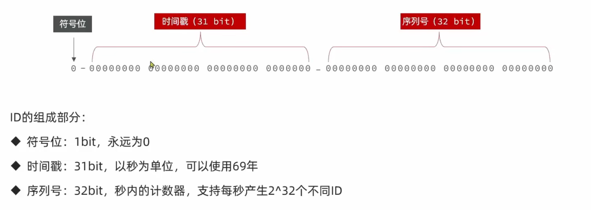 用Redis的incr命令对序列号递增(StringRedisTemplate的opsForValue的increment方法），日期增长实现对时间戳的增长，保证了ID的唯一性和递增性。
全局唯一ID生成策略：
UUID
Redis自增
snowflake算法
数据库自增
Redis自增ID策略：
每天一个key，方便统计订单量
ID构造是 时间戳 + 计数器
public long nextId(String prefixKey) {
// 1.获取当前时间戳
LocalDateTime now = LocalDateTime.now();
long nowSecond = now.toEpochSecond(ZoneOffset.UTC);
long nowTimeStamp = nowSecond - BEGIN_TIMESTAMP;
// 2.获取序列号
// 2.1获取当前日期，精确到天
String data = now.format(DateTimeFormatter.ofPattern("yyyy:MM:dd"));
// 2.2自增长
long count = stringRedisTemplate.opsForValue().increment("inc:" + prefixKey + ":" + data);
// 3.拼接返回,高位时间戳 低位序列号, 将时间戳向左移32位，低32位都为0，"|" 或运算填充低32位
return nowTimeStamp << 32 | count;
}
tb_voucher: 优惠卷的基本信息，优惠金额、使用规则等
tb_seckill_voucher: 优惠券的库存、开始抢购时间、结束抢购时间。(特价券才要填写这些信息)
实现优惠券秒杀的下单功能： * 秒杀是否开始或结束，如果尚未开始或已经结束则无法下单 * 库存是否充足，不足则无法下单
private void createVoucherOrder(VoucherOrder voucherOrder) {
Long userId = voucherOrder.getUserId();
Long voucherId = voucherOrder.getVoucherId();
// 创建锁对象
RLock redisLock = redissonClient.getLock("lock:order:" + userId);
// 尝试获取锁
boolean isLock = redisLock.tryLock();
// 判断
if (!isLock) {
// 获取锁失败，直接返回失败或者重试
log.error("不允许重复下单！");
return;
}
try {
// 5.1.查询订单
int count = query().eq("user_id", userId).eq("voucher_id", voucherId).count();
// 5.2.判断是否存在
if (count > 0) {
// 用户已经购买过了
log.error("不允许重复下单！");
return;
}
// 6.扣减库存
boolean success = seckillVoucherService.update()
.setSql("stock = stock - 1") // set stock = stock - 1
.eq("voucher_id", voucherId).gt("stock", 0) // where id = ? and stock > 0
.update();
if (!success) {
// 扣减失败
log.error("库存不足！");
return;
}
// 7.创建订单
save(voucherOrder);
} finally {
// 释放锁
redisLock.unlock();
}
}
真实场景下，成千上万个请求进行秒杀， 在高并发从场景下，库存出现超卖，会给商家带来巨大损失
解决超卖问题的方法是加锁
乐观锁的关键是判断之前查询得到的数据是否有被修改过，常见的方式有两种：
public Result seckillVoucherWithStockMysql(Long voucherId) {
Voucher voucher = voucherMapper.selectById(voucherId);
if (voucher == null) {
return Result.fail("优惠券信息不存在");
}
// 优惠券使用时间信息
SeckillVoucher seckillVoucher = seckillVoucherMapper.selectById(voucherId);
LocalDateTime beginTime = seckillVoucher.getBeginTime();
LocalDateTime endTime = seckillVoucher.getEndTime();
if (beginTime.isAfter(LocalDateTime.now())) {
return Result.fail("秒杀活动尚未开始！");
}
if (endTime.isBefore(LocalDateTime.now())) {
return Result.fail("秒杀活动已结束！");
}
// 优惠券剩余库存数量
Integer stock = seckillVoucher.getStock();
if (stock <= 0) {
return Result.fail("优惠券秒杀完毕库存不足！！！");
}
// 更新时判断是否库存是否大于0 乐观锁
boolean success = seckillVoucherService.update().setSql(" stock = stock - 1").gt("stock", 0)
.eq("voucher_id", voucherId).update();
if (!success) {
return Result.fail("优惠券秒杀完毕库存不足！！！");
}
VoucherOrder voucherOrder = new VoucherOrder();
voucherOrder.setId(redisIdWorker2.nextId("order"));
voucherOrder.setUserId(UserHolder.getUser().getId());
voucherOrder.setVoucherId(voucherId);
voucherOrder.setUpdateTime(LocalDateTime.now());
save(voucherOrder);
return Result.ok("抢购成功");
}
悲观锁：添加同步锁，让线程串行执行, 写多的场景， 用在插入操作比较合适
优点：简单粗暴
缺点：性能一般
乐观锁：不加锁，在更新时判断是否有其它线程在修改, 读多写少的场景，用在更新操作比较合适
优点：性能好
缺点：存在成功率低的问题
需求：修改秒杀业务，要求同一个优惠券，一个用户只能下一单
秒杀券目标时吸引更多的用户参与进来，避免黄牛抢购，所以要求一个用户只能下一单
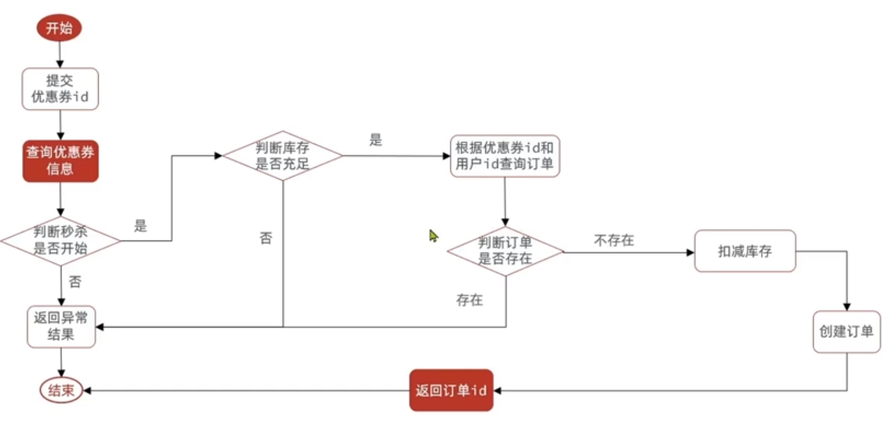
* 业务中涉及到查插入数据，在插入数据前，我们要添加悲观锁。
* 如果在事务内部加锁，锁释放了，但是事务可能没有提交，仍然存在并发安全问题
* Spring 的事务管理是基于 AOP（面向切面编程）实现的。AOP 通过代理对象来维护事务的生命周期，包括事务的开启、提交或回滚。如果直接使用目标对象，spring将无法在方法调用前后执行必要的事务管理操作，因为它依赖于代理机制进行事务管理。解决方法是获取事务的代理对象，通过代理对象去调用事务方法。
@Override
public Result seckillVoucherByUser(Long voucherId) {
Voucher voucher = voucherMapper.selectById(voucherId);
if (voucher == null) {
return Result.fail("优惠券信息不存在");
}
// 优惠券使用时间信息
SeckillVoucher seckillVoucher = seckillVoucherMapper.selectById(voucherId);
LocalDateTime beginTime = seckillVoucher.getBeginTime();
LocalDateTime endTime = seckillVoucher.getEndTime();
if (beginTime.isAfter(LocalDateTime.now())) {
return Result.fail("秒杀活动尚未开始！");
}
if (endTime.isBefore(LocalDateTime.now())) {
return Result.fail("秒杀活动已结束！");
}
// 优惠券剩余库存数量
Integer stock = seckillVoucher.getStock();
if (stock <= 0) {
return Result.fail("优惠券秒杀完毕库存不足！！！");
}
// 获取代理对象
IVoucherOrderService iVoucherOrderService = (IVoucherOrderService) AopContext.currentProxy();
// 根据userId加锁，不同用户不会被锁定，userId.toString()方法中会每次都会产生不同的userId，所以起不到锁定作用，intern()会从jvm中的常量池中去匹配userId
// 不将synchronized加在createVoucherOrder()方法上是因为锁粒度变大，锁的对象为this，多线程执行方法为串行执行，效率低，对userId加锁是相当对每一个用户进行加锁处理，锁粒度变小
Long userId = UserHolder.getUser().getId();
synchronized (userId.toString().intern()) {
return iVoucherOrderService.createVoucherOrder(voucherId);
}
}
@Transactional
public Result createVoucherOrder(Long voucherId) {
// 5.一人一单
Long userId = UserHolder.getUser().getId();
// 创建锁对象
SimpleRedisLock redisLock = new SimpleRedisLock("order:" + userId, stringRedisTemplate);
// 尝试获取锁
boolean isLock = redisLock.tryLock(1200);
// 判断
if(!isLock){
// 获取锁失败，直接返回失败或者重试
return Result.fail("不允许重复下单！");
}
try {
// 5.1.查询订单
int count = query().eq("user_id", userId).eq("voucher_id", voucherId).count();
// 5.2.判断是否存在
if (count > 0) {
// 用户已经购买过了
return Result.fail("用户已经购买过一次！");
}
// 6.扣减库存
boolean success = seckillVoucherService.update()
.setSql("stock = stock - 1") // set stock = stock - 1
.eq("voucher_id", voucherId).gt("stock", 0) // where id = ? and stock > 0
.update();
if (!success) {
// 扣减失败
return Result.fail("库存不足！");
}
// 7.创建订单
VoucherOrder voucherOrder = new VoucherOrder();
// 7.1.订单id
long orderId = redisIdWorker.nextId("order");
voucherOrder.setId(orderId);
// 7.2.用户id
voucherOrder.setUserId(userId);
// 7.3.代金券id
voucherOrder.setVoucherId(voucherId);
save(voucherOrder);
// 7.返回订单id
return Result.ok(orderId);
} finally {
// 释放锁
redisLock.unlock();
}
}
局限性:只适合单机场景
分布式锁：满足分布式系统或集群模式下多进程可见并且互斥的锁 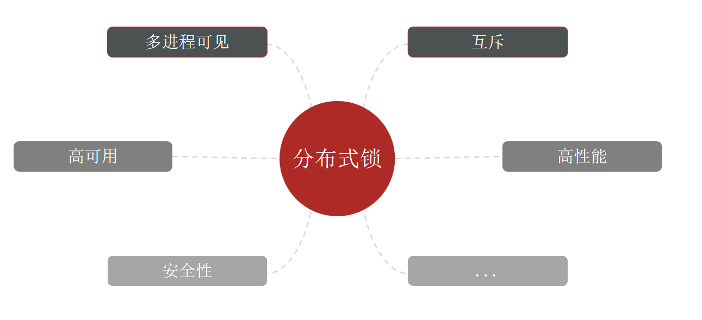
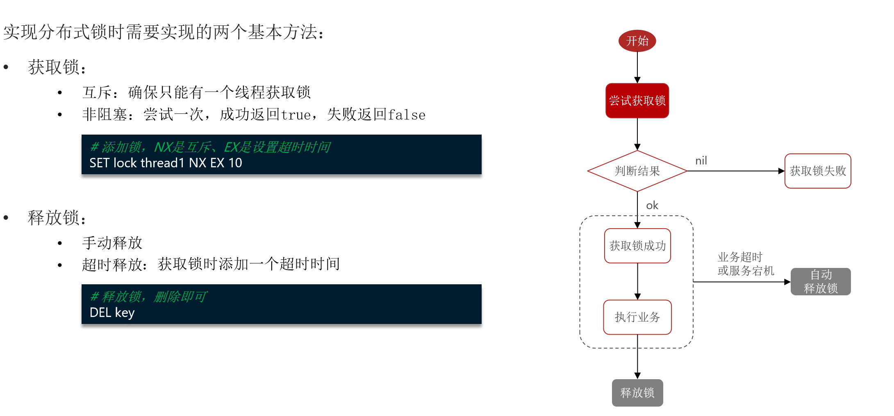
public class SimpleRedisLock2 implements ILock {
private StringRedisTemplate stringRedisTemplate;
private String name;
private static final String PRE_LOCK = "lock:";
private String getLockName() {
return PRE_LOCK + name;
}
public SimpleRedisLock2(StringRedisTemplate stringRedisTemplate, String name) {
this.stringRedisTemplate = stringRedisTemplate;
this.name = name;
}
@Override
public boolean tryLock(long timeoutSec) {
// 将线程ID当做value存入redis
long threadId = Thread.currentThread().getId();
Boolean absent = stringRedisTemplate.opsForValue().setIfAbsent(getLockName(), String.valueOf(threadId), timeoutSec, TimeUnit.SECONDS);
return Boolean.TRUE.equals(absent);
}
@Override
public void unlock() {
stringRedisTemplate.delete(getLockName());
}
}
存在的问题：
线程1获取到锁后，因为业务阻塞，阻塞时间过长导致锁超时提前释放了，线程2就获取到锁了执行业务，假如此时线程1业务结束，释放锁，结果把线程2的锁给释放了。
需求： 修改之前的分布式锁实现，满足：
1. 在获取锁时存入线程标识（可以用UUID表示）
在分布式系统中，不同的机器上可能会出现相同的线程id，因此要用UUID让分布式系统中的所有元素都能有唯一的辨识信息
2. 在释放锁时先获取锁中的线程标识，判断是否与当前线程标识一致
1. 如果一致则释放锁
2. 如果不一致则不释放锁
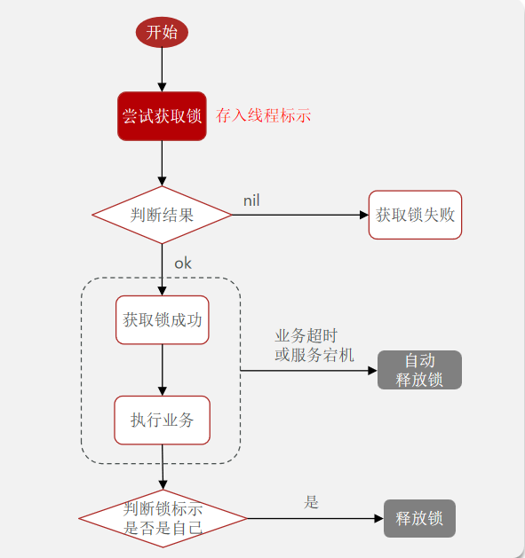
仍然存在问题，判断锁的标识和释放锁时两个操作，必须捆绑成一个原子操作，不会出错。
解决方法： 使用lua脚本实现锁的标识和释放锁原子性功能
lua脚本帮助你实现复杂的逻辑并保证操作的原子性。当执行 Lua 脚本时，Redis 会将整个脚本作为一个原子操作执行，即脚本在执行过程中不会被其他客户端的命令打断，从而避免了并发问题，保证了操作的原子性。
用StringRedisTemplate的execute命令去执行Lua脚本
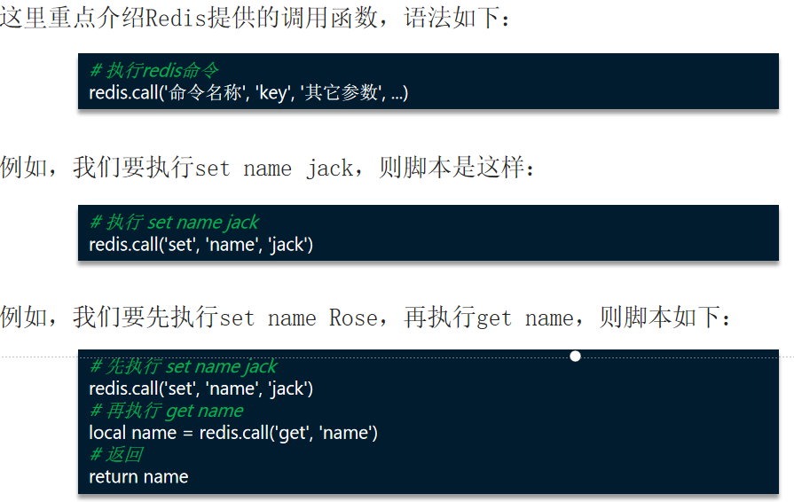
-- 比较线程标示与锁中的标示是否一致
if(redis.call('get', KEYS[1]) == ARGV[1]) then
-- 释放锁 del key
return redis.call('del', KEYS[1])
end
return 0
public class SimpleRedisLock implements ILock {
private String name;
private StringRedisTemplate stringRedisTemplate;
public SimpleRedisLock(String name, StringRedisTemplate stringRedisTemplate) {
this.name = name;
this.stringRedisTemplate = stringRedisTemplate;
}
private static final String KEY_PREFIX = "lock:";
private static final String ID_PREFIX = UUID.randomUUID().toString(true) + "-";
private static final DefaultRedisScript<Long> UNLOCK_SCRIPT;
static {
UNLOCK_SCRIPT = new DefaultRedisScript<>();
UNLOCK_SCRIPT.setLocation(new ClassPathResource("unlock.lua"));
UNLOCK_SCRIPT.setResultType(Long.class);
}
@Override
public boolean tryLock(long timeoutSec) {
// 获取线程标示
String threadId = ID_PREFIX + Thread.currentThread().getId();
// 获取锁
Boolean success = stringRedisTemplate.opsForValue()
.setIfAbsent(KEY_PREFIX + name, threadId, timeoutSec, TimeUnit.SECONDS);
return Boolean.TRUE.equals(success);
}
@Override
public void unlock() {
// 调用lua脚本
stringRedisTemplate.execute(
UNLOCK_SCRIPT,
Collections.singletonList(KEY_PREFIX + name),
ID_PREFIX + Thread.currentThread().getId());
}
}
基于setnx实现的分布式锁存在下面的问题 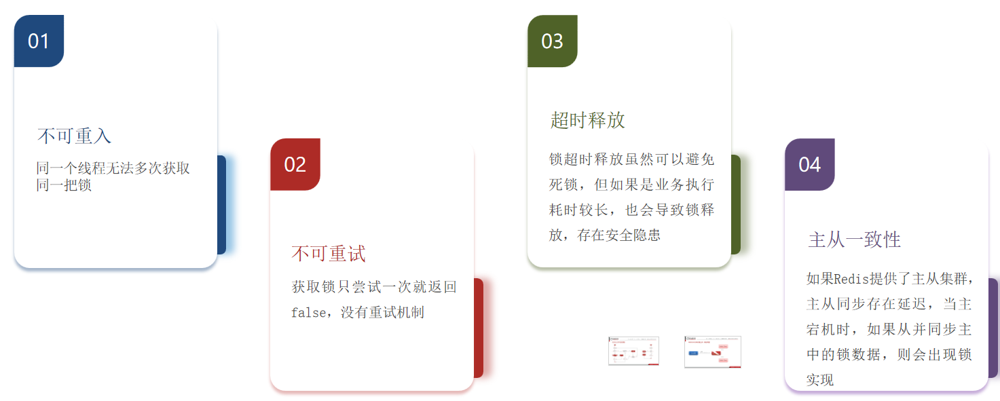
Redisson是一个在Redis的基础上实现的Java驻内存数据网格（In-Memory Data Grid）。它不仅提供了一系列的分布式的Java常用对象，还提供了许多分布式服务，其中就包含了各种分布式锁的实现。
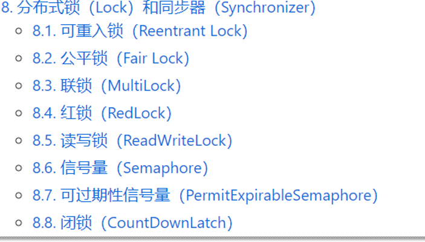
void method1() throws InterruptedException {
// 尝试获取锁
boolean isLock = lock.tryLock(1L, TimeUnit.SECONDS);
if (!isLock) {
log.error("获取锁失败 .... 1");
return;
}
try {
log.info("获取锁成功 .... 1");
method2();
log.info("开始执行业务 ... 1");
} finally {
log.warn("准备释放锁 .... 1");
lock.unlock();
}
}
可重入锁是 Redisson 最常用的锁类型，同一线程可以多次获取同一把锁而不会被阻塞。以下是加锁的详细步骤：
利用信号量和PubSub功能实现等待、唤醒，获取锁失败的重试机制
PubSub（发布 - 订阅）：Redis 的 PubSub 功能允许客户端订阅特定的频道，并在其他客户端向该频道发布消息时接收通知。在锁重试机制中，当持有锁的线程释放锁时，会向特定的频道发布消息，等待的线程订阅该频道，接收到消息后会尝试重新获取锁。
为了防止业务逻辑执行时间过长导致锁过期提前释放，Redisson 引入了看门狗机制。当一个线程成功获取到锁后，Redisson 会启动一个定时任务，每隔一段时间（默认是锁过期时间的 1/3）检查锁是否还存在，如果存在则自动延长锁的过期时间。
解决分布式锁主从一致性问题
Redlock 算法的核心思想是不依赖于单个 Redis 实例或主从复制，而是基于多个独立的 Redis 节点。在获取锁时，需要在大多数（超过一半）的 Redis 节点上成功获取到锁，才认为锁获取成功；释放锁时，需要在所有参与的 Redis 节点上释放锁。这样即使某个节点发生故障，只要大多数节点正常，锁的状态依然可以得到保证。
优化前
 优化后: 将优惠券库存和优惠券订单放入redis缓存中， 异步秒杀， 吞吐量从420~1100
一方面缩短了业务流程，另一方面减轻了数据库的压力
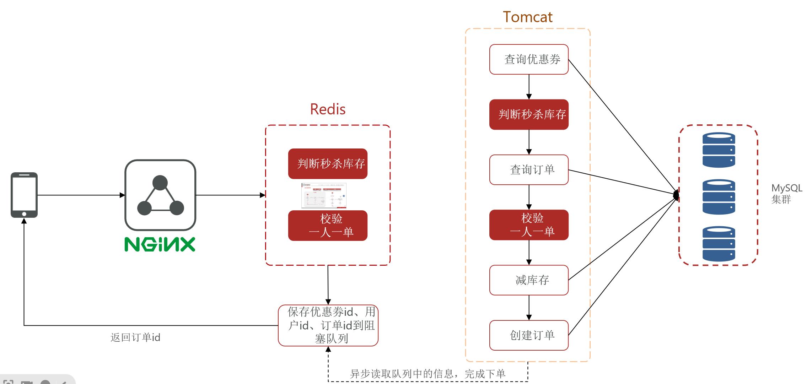
优化思路
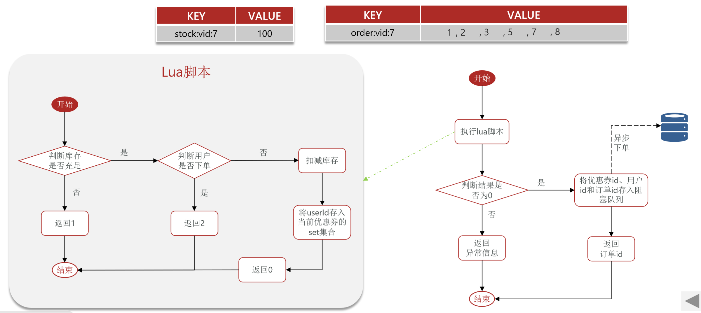
案例需求：
1. 新增秒杀优惠券的同时，将优惠券信息保存到Redis中
优化后: 将优惠券库存和优惠券订单放入redis缓存中， 异步秒杀， 吞吐量从420~1100
一方面缩短了业务流程，另一方面减轻了数据库的压力
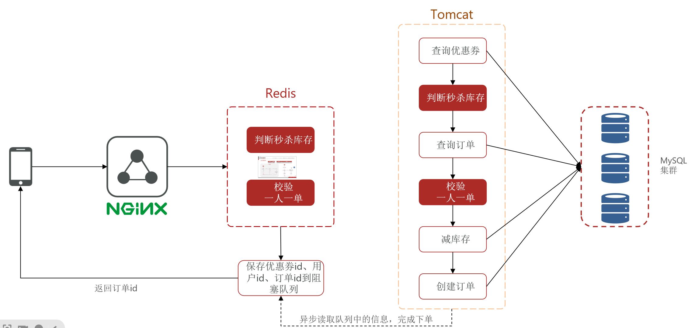
优化思路
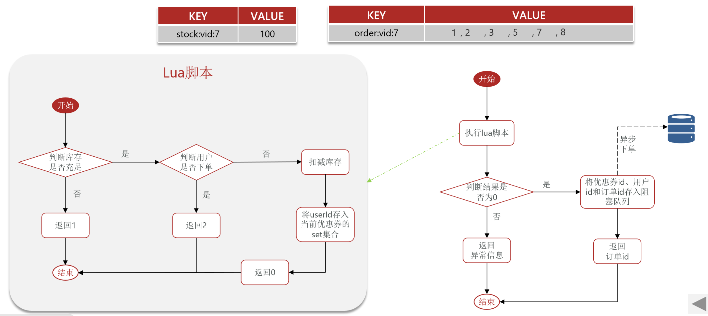
案例需求：
1. 新增秒杀优惠券的同时，将优惠券信息保存到Redis中
2. 基于Lua脚本，判断秒杀库存、一人一单，决定用户是否抢购成功
3. 如果抢购成功，将优惠券id和用户id封装后存入阻塞队列
4. 开启线程任务，不断从阻塞队列中获取信息，实现异步下单功能
1.
// 保存优惠券信息到redis中
@Transactional
public void addSeckillVoucher(Voucher voucher) {
// 保存优惠券
save(voucher);
// 保存秒杀信息
SeckillVoucher seckillVoucher = new SeckillVoucher();
seckillVoucher.setVoucherId(voucher.getId());
seckillVoucher.setStock(voucher.getStock());
seckillVoucher.setBeginTime(voucher.getBeginTime());
seckillVoucher.setEndTime(voucher.getEndTime());
seckillVoucherService.save(seckillVoucher);
// 保存秒杀库存到Redis中
stringRedisTemplate.opsForValue().set(SECKILL_STOCK_KEY + voucher.getId(), voucher.getStock().toString());
}
-- 1.参数列表
-- 1.1.优惠券id
local voucherId = ARGV[1]
-- 1.2.用户id
local userId = ARGV[2]
-- 1.3.订单id
local orderId = ARGV[3]
-- 2.数据key
-- 2.1.库存key
local stockKey = 'seckill:stock:' .. voucherId
-- 2.2.订单key
local orderKey = 'seckill:order:' .. voucherId
-- 3.脚本业务
-- 3.1.判断库存是否充足 get stockKey
if(tonumber(redis.call('get', stockKey)) <= 0) then
-- 3.2.库存不足，返回1
return 1
end
-- 3.2.判断用户是否下单 SISMEMBER orderKey userId
if(redis.call('sismember', orderKey, userId) == 1) then
-- 3.3.存在，说明是重复下单，返回2
return 2
end
-- 3.4.扣库存 incrby stockKey -1
redis.call('incrby', stockKey, -1)
-- 3.5.下单（保存用户）sadd orderKey userId
redis.call('sadd', orderKey, userId)
-- 3.6.发送消息到队列中， XADD stream.orders * k1 v1 k2 v2 ...
redis.call('xadd', 'stream.orders', '*', 'userId', userId, 'voucherId', voucherId, 'id', orderId)
return 0
java代码，执行lua脚本
@Override
public Result seckillVoucher(Long voucherId) {
Long userId = UserHolder.getUser().getId();
long orderId = redisIdWorker.nextId("order");
// 1.执行lua脚本
Long result = stringRedisTemplate.execute(
SECKILL_SCRIPT,
Collections.emptyList(),
voucherId.toString(), userId.toString(), String.valueOf(orderId)
);
int r = result.intValue();
// 2.判断结果是否为0
if (r != 0) {
// 2.1.不为0 ，代表没有购买资格
return Result.fail(r == 1 ? "库存不足" : "不能重复下单");
}
// 结果为0
// TODO 保存到阻塞队列中
// 3.返回订单id
return Result.ok(orderId);
}
秒杀业务的优化思路是什么？
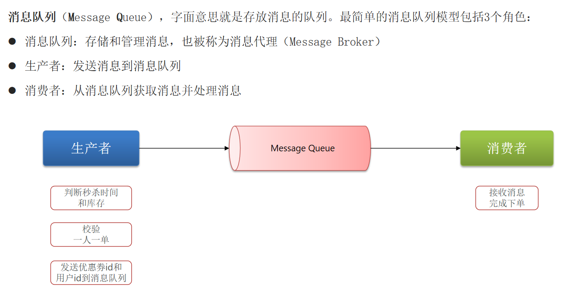
list结构：基于List结构模拟消息队列
LPUSH 结合 RPOP、或者 RPUSH 结合 LPOP来实现。注意的是，当队列中没有消息时RPOP或LPOP操作会返回null，并不像JVM的阻塞队列那样会阻塞并等待消息。因此这里应该使用BRPOP或者BLPOP来实现阻塞效果。
优点：
利用Redis存储，不受限于JVM内存上限
基于Redis的持久化机制，数据安全性有保证
可以满足消息有序性
缺点：
无法避免消息丢失
只支持单消费者
PubSub：基本的点对点消息模型
 优点：
采用发布订阅模型，支持多生产、多消费
优点：
采用发布订阅模型，支持多生产、多消费
缺点：
Stream：比较完善的消息队列模型 a. stream的单消费模式